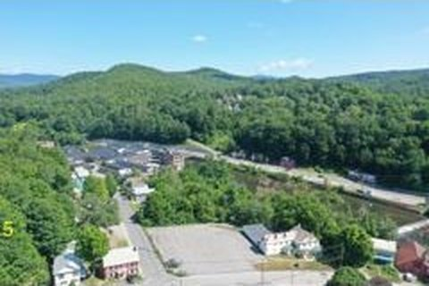

In the heart of Springfield's Central Business District, on the banks of the Black River.
📍 100 River Street, Springfield, VT 05156
Springfield was once a thriving manufacturing center anchored by the precision tool and die industry. After decades of transition, the town is actively working toward revitalization.

Springfield Medical Center is on-site. Springfield Hospital nearby. Full pharmacy on premises.
Local restaurants and cafes within walking distance. Vermont's craft food and beverage scene is growing.
Black River for fishing and kayaking. Nearby hiking trails. Stellafane Observatory (Springfield Telescope Makers). Skiing at Okemo (30 min).
Downtown Springfield shops and services. Walmart and major retail in nearby Claremont, NH (15 min).
Springfield schools, CCV (Community College of Vermont), and vocational training nearby.
I-91 access, Route 11 corridor. Amtrak service at nearby stations. Lebanon Municipal Airport (30 min).